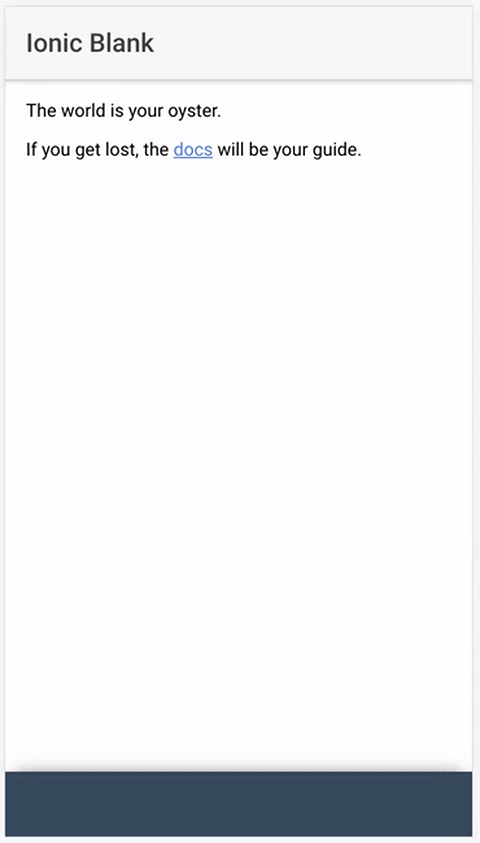
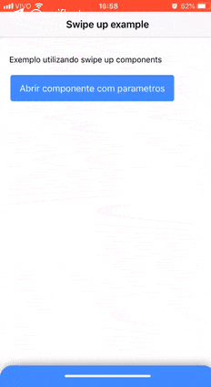

Trabalhando em um projeto de curioso, ‘precisei’ fazer um swipe up em android nativo, com uma lib resolvi o problema e vida que segue.
Porém fiquei curioso em saber se o Ionic seria capaz de fazer a mesma coisa.
Iniciando uma busca, encontrei muita coisa mas nada funcionou 100% até encontrar esse tutorial que mostra como fazer e de uma maneira tão simples que vou deixar a referência logo no início. Post referência
No post ele comenta um pouco sobre manipulação de DOM e como utilizar o Hammer.js.
No post original ele faz apenas o swipe, para abrir e fechar. Porém eu queria algumas coisa a mais.
Como:
- Abrir o componente clicando, mantendo o efeito
- Abrir o componente clicando em um botão fora do contexto do componente
Brinde:
- Ajustar o css para ficar parecido com o componente normalmente usado nos apps atuais
Listando as tarefas, vamos ao que precisei alterar.
Abrir o componente clicando, mantendo o efeito
Usando os eventos do Hammer.js apenas precisei incluir o tap na lista de eventos para funcionar. Suave!
hammer.on('tap', (ev)=>{
this.open();
});
O método open() utiliza o DomController para manipular e animar o que precisamos, da seguinte maneira:
open(){
// Este metodo já existia no tutorial original, apenas isolei em um método para controlar 'por fora'
this.domCtrl.write(() => {
this.renderer.setElementStyle(this.element.nativeElement, 'transition', 'top 0.5s');
this.renderer.setElementStyle(this.element.nativeElement, 'top', this.handleTop + 'px');
});
}
Com isso consegui com um clique na tela abrir o componente com o mesmo efeito do swipe. TOP.
Próximo…
Abrir o componente clicando em um botão fora do contexto do componente, com parametros
Aqui tinha um desafio maior, sem nada na doc, afinal, estava fora do contexto do Hammer.js para conseguir manipular.
Com isso precisei recorrer ao Events do angular para fazer essa comunicação entre componentes.
Código da page home, envia o evento para algum lugar do app que escute.
callDetails(){
this.events.publish('open', {dados: "Dados via parametro"});
}
Código do componente onde o listener fica esperando o evento para iniciar o método open().
constructor(public events: Events, /* outros controllers...*/) {
events.subscribe('open', (params)=>{
this.details = params.dados;
this.open(); // olha ele ai de novo. =D
})
Mais uma pra dentro.
Ajustar o css para ficar parecido com o componente normalmente usado nos apps atuais
O css do exemplo original, é literalmente um quadrado que faz o swipe up com o conteúdo da página.
Para o exemplo que eu estava trabalhando precisei alterar isso um pouco.
Exemplo do Josh: 
Vamos aos ajustes que fiz. Pouca coisa mas já deu uma diferença e mostra o que podemos ajustar para ficar do gosto que precisamos.
content-drawer {
background: map-get($colors, 'primary');
width: 100%;
height: 100%;
position: absolute;
z-index: 10 !important;
box-shadow: 0px -4px 22px -8px rgba(0,0,0,0.75);
border-radius: 20px;
text-align: center;
color: map-get($colors, 'light');
.linha{
width: 40%;
height: 4px;
margin: 16px auto 40px;
border-radius: 26px;
background: map-get($colors, 'light');
}
}
Resultado com os ajustes de css acima: 
Com isso encerro o exemplo com os ajustes necessários.
Brinde
Esse exemplo publiquei no gh-pages de maneira bem automática. Como?
O github pages é um “server” que hospeda páginas estáticas, como esta que você está vendo.
Para publicar um app web ionic temos alguns truques.
Antes de qualquer truque precisamos instalar os packages para isso.
npm install angular-cli-ghpages --save
Após instalar basta colar esse código dentro de scripts para automatizar tudo. Build e deploy.
"scripts": {
"gh-pages": "ionic build --base-href 'https://leonardobenedeti.github.io/ionic3-swipe-up-component/' --prod && npx ngh --dir=www/"
}
Com esse script, automaticamente o package do gh-pages cria a branch e publica tudo pra você. =D